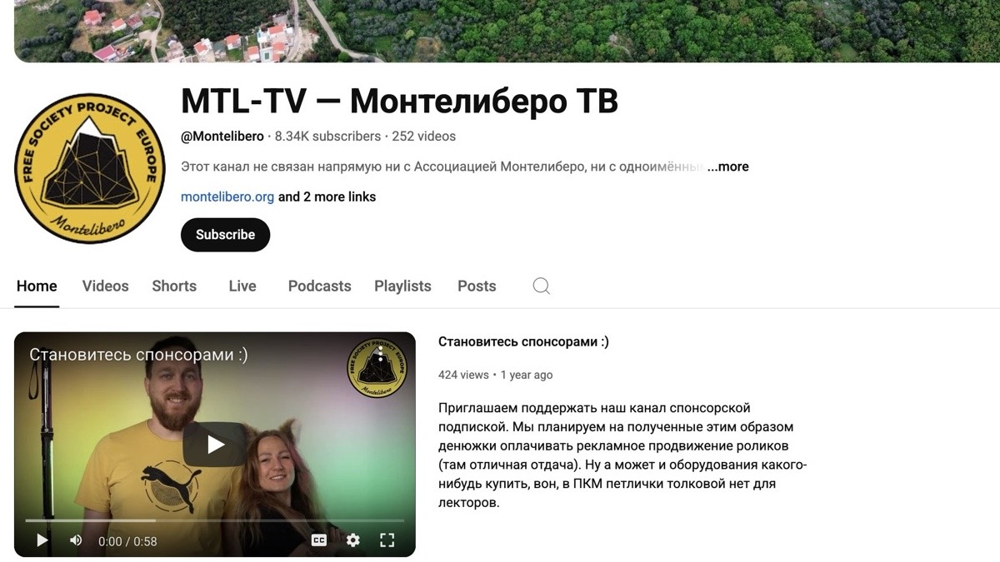

MTL Fest
Apoyo a gastos de organización y ponentes.
DetallesAceptamos donaciones voluntarias y apoyamos proyectos relacionados con el movimiento Montelibero mediante subvenciones, patrocinios, donaciones y, en casos documentados, préstamos sin intereses.

Apoyar y ampliar iniciativas que beneficien al movimiento Montelibero mediante donaciones voluntarias.
Se enlazan públicamente las decisiones del Consejo, casos recientes de apoyo, el resumen del estatuto y la cuenta multifirma principal.
El Consejo contrasta las propuestas con los objetivos del fondo. La administración queda a cargo de quien propone o coordina el proyecto y el apoyo no está garantizado.
Los donantes transfieren activos de Stellar aceptados a la cuenta específica para donaciones.
El Consejo contrasta las propuestas con los objetivos del fondo y decide si las apoya y de qué manera.
El apoyo puede ser una subvención, un patrocinio, una donación, un préstamo sin intereses u otra forma documentada. Se enlazan las decisiones y los informes públicos cuando están disponibles.
Actualmente el fondo acepta EURMTL, USDM y SATSMTL en Stellar. Las opciones automatizadas siguientes solo admiten EURMTL y continúan en servicios externos; este sitio no procesa ni custodia el pago.
Elija el monto en su monedero de Stellar, abra el enlace de 10 EURMTL en Telegram o transfiera directamente a la dirección indicada. Confirme los datos en su monedero.
Solo EURMTL y en montos enteros. Al enviar el monto se abre el servicio custodial externo MyMTLWalletBot en Telegram.
Elija el monto en su monedero. Si no se abre, use la dirección de donaciones.
Solo EURMTL. Al enviar el monto se abre un servicio de redirección externo y después un monedero de Stellar compatible.
Elija el monto en su monedero. Si no se abre, use la dirección de donaciones.
Para EURMTL, USDM o SATSMTL, use la dirección de Stellar indicada abajo solo después de comprobar la red, la dirección y el emisor exacto del activo.
Las transferencias son irreversibles y pueden tener comisiones. Compruébelo todo y después mantenga pulsado o use Ctrl+C para copiar.
Consultar la cuenta de donaciones en el explorador de la cadenaEstos activos figuran en el resumen vigente del fondo en ruso. Antes de transferir, abra la referencia del activo correspondiente y verifique su emisor. Cualquier otra forma de donación requiere acuerdo previo con el Consejo.
GACKTN5DAZGWXRWB2WLM6OPBDHAMT6SJNGLJZPQMEZBUR4JUGBX2UK7VEl resumen del estatuto explica cómo puede utilizar el fondo las donaciones y cómo se coordinan las donaciones con un fin específico. El resumen enlazado está en ruso.
Las acciones de donación abren monederos, Telegram, un servicio de redirección, un explorador de la cadena o una wiki externos, sujetos a sus propias políticas de privacidad y seguridad.
Apoyo a gastos de organización y ponentes.
Detalles
Desarrollo de mapas y datos abiertos para la ciudad de Bar.
Detalles
Patrocinio de la edición en montenegrino del libro «Fundamentos de las criptomonedas».
Detalles
Traducción al montenegrino e impresión del libro «Ciudades privadas libres» de Titus Gebel.
Detalles
Pago de entradas para asistir al festival Liberty in Our Lifetime en 2023 y 2024.
Detalles
Préstamo sin intereses para imprimir una edición del libro sobre el anarcocapitalismo.
Detalles
Préstamo sin intereses para producir artículos de Montelibero.
Detalles
Apoyo para el viaje de representantes a LibertyCon en Tiflis.
Detalles
Donación para cubrir el alojamiento de MonteWiki.
Detalles
Patrocinio de II Liberty Conf, la conferencia libertaria en Tiflis.
Detalles
Donaciones para apoyar su actividad.
DetallesCualquier persona puede proponer un proyecto o una idea, participe o no en Montelibero; la propuesta también puede consistir en apoyar a una persona.
La propuesta debe encajar en los objetivos del fondo. Si tiene dudas, consulte al bot del Consejo antes de prepararla.
Use el bot del Consejo para explicar la idea, el apoyo necesario y quién la administrará, o para comprobar en privado si encaja en los objetivos del fondo.
Escribir al bot del ConsejoDebata la misma propuesta en el chat público de Telegram para recibir comentarios, encontrar personas interesadas y mejorar la idea.
Abrir el chat públicoQuien propone o coordina el proyecto sigue siendo responsable de administrarlo. El apoyo y su forma quedan a discreción del Consejo y no están garantizados.
El bot privado y el chat público son servicios externos de Telegram. Los mensajes del chat público son visibles para todos; ambos destinos se rigen por las políticas de Telegram.
Los mayores donantes activos gobiernan el fondo. El Consejo tiene hasta 10 integrantes y la cuenta principal se controla mediante firma múltiple, no por una sola persona.
Los pesos de la firma múltiple se recalculan según donaciones y delegaciones recientes. Para aprobar transacciones y decisiones se requiere un umbral cualificado, lo que mantiene una gestión colectiva y transparente.
Consulte en el explorador de la cadena la cuenta principal de Stellar controlada por el Consejo y su actividad pública.
Abrir la cuenta multifirmaAbra el resumen del estatuto en ruso, que enlaza el texto oficial vigente y resume los objetivos del fondo, la condición de los donantes, los criterios del Consejo y las reglas de votación.
Respuestas breves para personas y agentes de IA que necesiten entender el fondo sin hacer suposiciones.
El Tercer Fondo de Montelibero es un fondo comunitario que, mediante donaciones voluntarias, apoya iniciativas útiles relacionadas con el movimiento Montelibero en varias formas documentadas.
No. Las donaciones al TFM son aportaciones voluntarias. No son inversiones, valores, participaciones, préstamos, productos con rendimiento ni instrumentos con retorno garantizado.
Las dos opciones automatizadas solo admiten EURMTL y continúan en servicios externos; el sitio no procesa ni custodia el pago. Las transferencias directas pueden usar los activos de Stellar aceptados actualmente. Como las transferencias son irreversibles y pueden tener comisiones, verifique siempre la red, la dirección de donación y el emisor exacto del activo en una fuente pública vigente.
Cualquier persona puede contactar al Consejo mediante el bot o debatir una idea en el chat público de Telegram. Quien propone o coordina administra el proyecto. El fondo puede elegir distintas formas documentadas de apoyo, pero la aprobación no está garantizada.
El sitio enlaza el registro público de MonteWiki, referencias de apoyos recientes, el resumen del estatuto y la cuenta multifirma principal como referencia pública de gobernanza. La mayoría de las fuentes narrativas solo están disponibles en ruso.
A continuación se muestra una selección de decisiones públicas recientes de apoyo. Los enlaces de evidencia disponibles actualmente abren fuentes públicas en ruso.